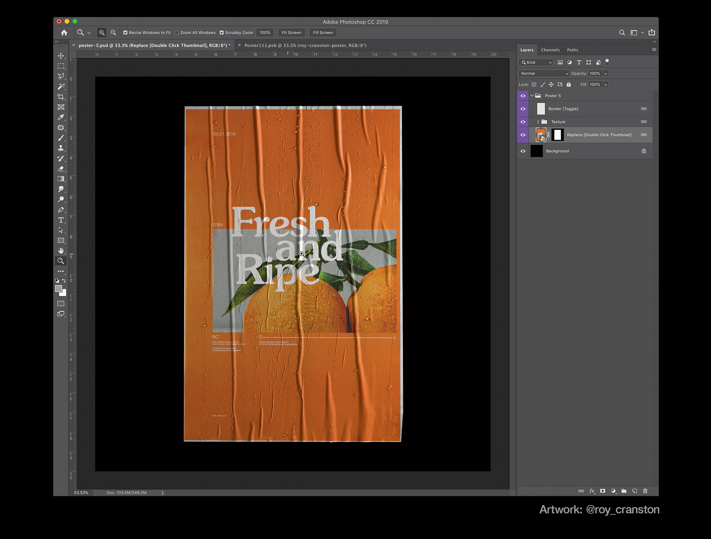

El diseño gráfico es el que comunica a través de imágenes o un conjunto de elementos visuales, los cuales transmitirán -desde el concepto- una idea o sensación hacia el espectador (aunque no a cualquier espectador). Dentro de la definición del diseño gráfico se establece que el mensaje producido responde a objetivos específicos, dirigidos a una audiencia particular a la que va enfocada el mensaje.
Gracias a esto, el diseño gráfico es uno de los medios más adecuados para la expresión artística. Se dice que una imagen vale más de mil palabras, me atrevo a agregar que: un buen gráfico vale más de mil imágenes. Ya sea un mensaje personal, político, de protesta o de apoyo, elementos cada vez más presentes en nuestra realidad, el diseño gráfico te permite transmitirlo.

El diseño gráfico no solo tiene fines comerciales.
¿Cómo Empezar?
Diseño Gráfico
En referencia al diseño donde se hacen carteles, inforgrafías, flyers y demás composiciones basadas principalmente en la imagen. Especialmente recomendado a las personas que se les dificulta dibujar, pues puedes usar otros recursos de manera creativa. Para empezar a diseñar es necesario algun tipo de programa para manejo de imagenes bitmap, por ejemplo GIMP, que es gratis y de código abierto.
Ilustración
La ilustración gráfica es una forma visual de comunicación que consiste en hacer llegar el mensaje a través de ilustraciones. Una ilustración es un dibujo, estampación o grabado memorable. El ejemplo más comun es el logotipo, pero la ilustración puede hacer mucho más. para comenzar sólo necesitamos un software de manejo de imagenes vectoriales, como inkscape, que es gratis y de código abierto.
Recursos
Aquí hay una serie de tutoriales que pueden ayudarte a comenzar tu exploración del medio, si te interesa aún más recomiendo hacer tus propios proyectos, y abandonar poco a poco los tutoriales. Recuerda que son una herramienta, no los trates como un testamento.